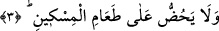
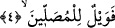

ayıpladılar. Ve “Sen dîninden mi döndün?” dediler. O “Hayır vallâhi, ben dînimden
dönmedim. Ama Muhammed’in sağında ve solunda birer mızrak gördüm. Vermeseydim
onları bana saplayacağından korktum” dedi.[229]
Buradaki “ellezî” sılası bilinen birisi içindir. Ama cins için olma ihtimâli de vardır.
O zaman dîni yalan sayan herkes buradaki hükme dâhil olur. O zaman “dîni yalanlayan
kimse” kavramı, kendisini hayvânî nefis kapladığı için zayıflara eziyet eden, onları sert
ve kaba bir biçimde azarlayan herkese şâmil olur.
3. Yoksulu doyurmaya teşvik etmez;
Zengin olan âile efrâdını ve başkalarını “Yoksulu doyurmaya” yâni ona yiyecek
vermeye “teşvik etmez.” Fakîr ve muhtâclara yemek vermez. Ve, hayvânî nefis kendine
gâlip geldiği, mal sevgisi ağır bastığı, cimrilik ahlâksızlığı kendisini ele geçirdiği için
hak edene iyilik edilmesini engeller. O başkasını buna teşvîk etmezse, kendisi bunu
nasıl yapar! Buradan anlaşılıyor ki, iyiliğe teşvîk ile o fiili terk, yalanlamanın
emârelerindendir.
Bu âyette, “it‘âm/yedirme” fiilinin kullanılmayıp da “taâm/yemek” kelimesinin
getirilmesi ve bunun “miskîn/fakîr”e izâfe edilmesi bize gösteriyor ki, zenginlerin
mallarında fakîrlerin hakları vardır. Demek ki yoksula kendi hakkı olan şeyi vermemek
en büyük cimrilik, kalb katılığı, tabiat ve yaratılışın düşüklüğüdür.
Burada şöyle bir soru hatıra gelebilir: “Kişi çoğu zaman yoksulu yedirmeyi teşvik
etmez ve bu günah sayılmaz. O halde burada nasıl oluyor da bu hareket kınanıyor?”
Derim ki: Ya yoksula yedirmeyi teşvîk etmemesi, o kişinin yaptığının karşılığını
göreceğine inanmaması yüzündendir. Ya da “teşvîk etmeme”, “cimrilik”ten ve “fakîrlere
ihsânda bulunmama”dan kinâyedir. Bunun kınanma ve azarlanma konusu olmasında
hiçbir şüphe yoktur. Tıpkı başkasını iyilik yapmaktan alıkoymanın kınanmasında şüphe
olmadığı gibi.
Alçak kimse, lütuf ve ihsândan uzak olur,
Başkalarının bağış ve ihsânını da engeller.
Aşağılık adam, başkası murâd alsın istemez,
Bayağı kimse sineğin kadehe yaklaşmasına bile izin vermez.
4. Yazıklar olsun o namaz kılanlara ki,